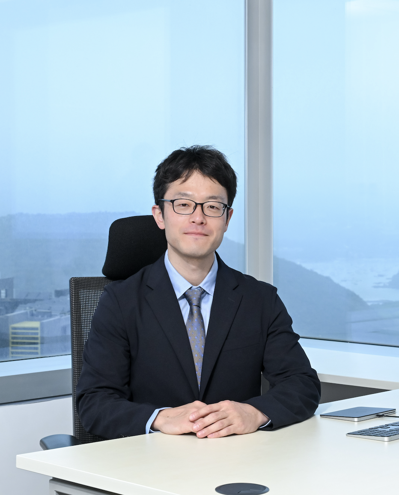

渡辺 悠樹 Haruki Watanabe

Professor, Department of Physics, The Hong Kong University of Science and Technology
IAS Professor, HKUST Jockey Club Institute for Advanced Study
CV はこちら（PDF）
連絡先：hwatanabe@ust.hk
略歴
1986年8月、長野県下諏訪生まれ。
| 2002年4月 – 2005年3月 | 東京都立西高等学校 |
|---|---|
| 2006年4月 – 2010年3月 | 東京大学 理学部物理学科 |
| 2010年4月 – 2012年3月 | 東京大学大学院 理学系研究科 修士課程（2012年3月修士号取得） |
| 2011年9月 – 2015年5月 | University of California, Berkeley（2015年5月 Ph.D. 取得、指導教員: Ashvin Vishwanath） |
| 2015年9月 – 2016年1月 | Pappalardo Fellow, Massachusetts Institute of Technology |
| 2016年2月 – 2018年12月 | 東京大学 工学系研究科 物理工学専攻 講師 |
| 2019年1月 – 2026年2月 | 東京大学 工学系研究科 物理工学専攻 准教授 |
| 2026年3月〜 | 香港科技大学 物理学系 教授／高等研究院 教授 |
受賞歴
- 第 25 回 素粒子メダル（2025年）
- 東京大学工学部 Best Teaching Award（2025年）
- 文部科学大臣表彰 若手科学者賞（2024年）
- New Horizons in Physics Prize（Breakthrough Prize Foundation, 2022年）
- 東京大学卓越研究員（2017年）
- 第 12 回 凝縮系科学賞（2017年）
- 第 31 回 西宮湯川記念賞（2016年）
- 日本物理学会 第 10 回 若手奨励賞（2016年）
- MIT Pappalardo Fellowship（2015–2018年）
研究業績
研究プロフィール：
著書
- 複素関数論入門（共立出版, 2026年2月）
- 解析力学 ―基礎の基礎から発展的なトピックまで―（共立出版, 2024年7月）
- SGC ライブラリ「量子多体系の対称性とトポロジー」（サイエンス社, 2022年）
- 「研究者、生活を語る」（岩波書店）一章寄稿
論文・著書以外の書き物
研究関連
- 「有限群の射影表現」, 数理科学, No. 749（2025年）
- 「時間結晶 ―ウィルチェックの提案から離散時間結晶，そして非線形力学系における類似現象まで―」, 数理科学, No. 732, pp.45–52（2024年）
- 「超伝導体のトポロジーを簡単に判定する方法 ― トポロジカル超伝導体をより探索しやすくするために」, academist Journal
- 「空間群の表現論とバンド構造のトポロジー」（誌上セミナー全 5 回）, 固体物理（2019–2020年）
- 第 1 回「空間群・点群の既約表現」, Vol. 54-4（2019年）
- 第 2 回「バンド構造の表現と適合関係」, Vol. 54-5（2019年）
- 第 3 回「トポロジーの対称性指標」, Vol. 54-7（2019年）
- 第 4 回「新しいトポロジカル相への応用」, Vol. 54-10（2019年）
- 第 5 回「トポロジカル超伝導体への応用」, Vol. 55-4（2020年）
- 「対称性の "破れ"」, 数理科学, No. 669, pp.48–53（2019年）
- 「いかにして研究テーマを見つけるか」, 数理科学, No. 658, pp.53–59（2018年）
- 「ワイル・ディラック半金属や量子スピン液体探索の新しい指導原理」, 日本物理学会誌, 72 巻 1 号（2017年）
- 「時間結晶は存在するか」, 物性研便り, Vol. 56-3, pp.10–13（2016年）
- 「南部ゴールドストーンモードと非フェルミ流体」, 固体物理, Vol. 51-6（2016年）
- 「南部・ゴールドストーンボソンの統一的理解」, 日本物理学会誌, 68 巻 4 号（2013年）
- A. J. Leggett 教授訪問時の講義録, 物性研究, 1, 0211201（2012年）
留学関連
- 「私が東大から香港に移ったわけ」, 日本経済新聞（2026年4月4日）
- 「『もっと自由に国を選んでいい』東大卒業生が語る海外大学院という選択」, UmeeT インタビュー（2019年）
- 米国大学院学生会ニュースレター
その他
- 無料サービスだけで作る掲示板付きの教科書サポートページ（PDF）
- 「国際遠距離を乗り越えて──研究者としてのキャリアと家庭生活」, 岩波ウェブ「たねをまく」（2022年）
- 「物理学賞は『トポロジカル絶縁体』か『幾何学的量子位相』では」, 朝日新聞論座（2020年9月29日）
外部資金
- 科研費 基盤研究 (B) 「ゲージ不変な超伝導体の非線形応答理論」（2024–2028年, 14,300 千円）
- 科研費 基盤研究 (B) 「量子系における多重極モーメント」（2020–2023年, 16,120 千円）
- JST さきがけ「トポロジカル材料による革新的機能の創出」（2019–2021年）
- 科研費 若手研究 (B) 「空間群対称性とトポロジカル物質」（2017–2019年, 4,160 千円）
研究会オーガナイザー
- ISSP Workshop "Topology, Entanglement, and Dynamics in Quantum Many-Body Systems (TEDQMB)"（2025年12月22日）
- 解析力学 ミニ研究会（2024年9月30日）
- Online international workshop "Recent Developments on Multipole Moments in Quantum Systems"（2020年5月11–12日）
- International workshop "Symmetry and Topology in Condensed-Matter Physics"（2018年6月19–21日）